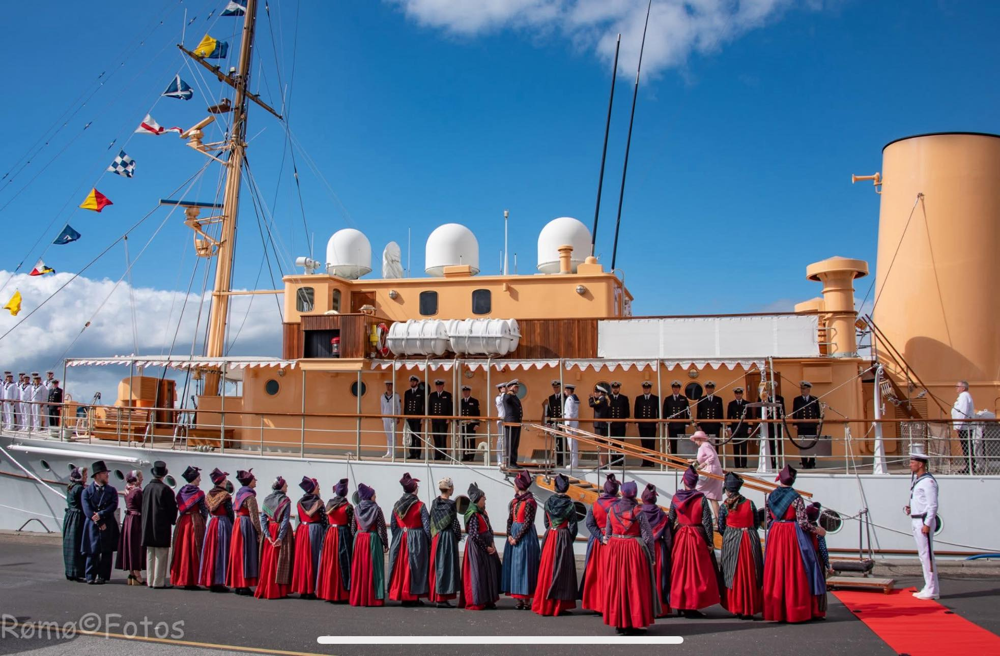

Om os
Rømø dragtens venner er stiftet den 22. februar 2024. Vi er en frivillig forening, der er dedikeret til at formidle og fremme kendskabet til og bevarelsen af dragter med oprindelse fra Rømø. Vi deltager i relevante begivenheder og arrangementer og du er meget velkommen til at deltage i din egen dragt eller leje en dragt igennem foreningen. Vi har dame, herrer og børnedragter til udlejning.
Vi er et fællesskab for alle, der er interesserede i rømødragter og vores mål er at bevare vores kulturarv og skabe et rum, hvor folk kan dele deres passion for rømødragter og lære mere om deres betydning og historie samt bevare det traditionelle håndværk.
Bliv aktiv- eller støttemedlem for 100,- kr. pr. år. Kontakt bestyrelsen på mail foreningenrdv@gmail.com
Rømø dragtens historie
Det er meget begrænset, hvad vi ved om Rømødragterne fra slutningen af 1700-tallet, hvor de var en del af den daglige klædedragt. Der er ikke skrevet noget ned om det, men heldigvis er der bevaret nogle dragter og dragtdele både på museer og i privateje…
Læs mere →